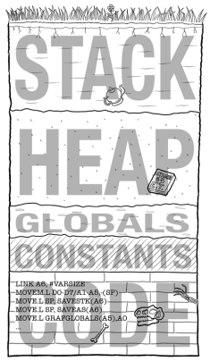

<!DOCTYPE html>
<html lang="en">
  <head>
    <meta charset="utf-8" />
    <meta name="viewport" content="width=device-width, initial-scale=1.0, maximum-scale=1.0, user-scalable=no" />

    <title>期中复习</title>
    <link rel="shortcut icon" href="./favicon.ico" />
    <link rel="stylesheet" href="./dist/reset.css" />
    <link rel="stylesheet" href="./dist/reveal.css" />
    <link rel="stylesheet" href="./dist/theme/black.css" id="theme" />
    <link rel="stylesheet" href="./css/highlight/github.css" />

    <link rel="stylesheet" href="./_assets/theme.css" />

  </head>
  <body>
    <div class="reveal">
      <div class="slides"><section  data-markdown><script type="text/template">

<div class="center">
<div style="width: 100%">


# 《程序设计专题》朋辈辅学

<hr />
week 1 期中复习

章越

</div>
</div>
</script></section><section  data-markdown><script type="text/template">

## 课程安排

- 期中复习
  - 指针进阶
  - 链表
  - 模块化程序设计
  - 文件进阶
  - libgraphics和simpleGUI库

- 习题答疑

- 大程指导

- 适当拓展


<aside class="notes"><p>大概看了大家填写的问卷，主要还是希望答疑和回顾课堂内容。所以我这边课程的拓展内容会相对少一些，主要以课程要求的内容为主</p>
<p>也看到有同学提到想学学vscode、github的使用，这个后面有时间的话可以简单提提 科学上网的话这边不太方便讲，有需要的同学可以去cc98上看看前辈提供的方法</p>
<p>这周已经是春七周了，离期中考试已经不远了，所以我们今天的课程以期中复习为主，然后后面也会给大家留一些时间用于答疑</p>
</aside></script></section><section ><section data-markdown><script type="text/template">

<div class="center">
<div style="width: 100%">

# 指针进阶
<hr/>

</div></div>

<aside class="notes"><p>那我们接下来正式开始复习，如果在这个过程中大家有什么问题可以随时打断我</p>
</aside></script></section><section data-markdown><script type="text/template">

## 数据类型

众所周知，C语言主要包含以下类型

- 基本数据类型
  - 整型: short, int, unsigned int...
  - 浮点型: float, double
  - 字符型: char
  - 空类型: void(不能用于定义变量)
- 构造数据类型
  - 数组
  - 结构: struct
  - 联合: union
  - 枚举: enum
- 指针类型

</script></section><section data-markdown><script type="text/template">

## 结构和联合

结构体分配足够的空间存储其所有成员，而共用体分配空间仅存储最大的成员。

```c[1-4|6-10]
struct {
  int a;  // 4字节
  int b;  // 4字节
} s1; // s1占用8个字节

union {
  int a;
  int b;
} u1; // u1占用4个字节
```

<p class="fragment">
共同体变量中起作用的成员是最后一次存放的成员，在存入新的成员后原有的成员失去了作用
</p>

<aside class="notes"><p>在结构体s1中，a和b有各自独立的内存空间。但在联合体u1中，a和b共用同一内存空间。因此联合体只需存储最大的成员，即整数b，占用4字节。</p>
</aside></script></section><section data-markdown><script type="text/template">

## 结构和联合

字节对齐: <br/>占用空间大小能被其包含的所有基本数据类型的大小所整除

```c[1-4|5-9]
struct {
  int a;  // 4字节
  char b; // 1字节
} s1; // s1占用8个字节
union S {
  char a; // 1字节
  int b[4]; // 4*4=16字节
  double c; // 8字节
} x;  // x占用16个字节
```

union大小必须满足：
1. 大小足够容纳最宽的成员；
2. 大小能被其包含的所有基本数据类型的大小所整除。

<aside class="notes"><p>联合体（共同体）</p>
</aside></script></section><section data-markdown><script type="text/template">

## 结构和联合

一个小练习：
```c
union U {
    char s[9];
    int n;
    double d;
} x;

sizeof(x) == ?
```
<pre class="code-wrapper fragment">
<code class="c hljs c-like">16
</code>
</pre>

<aside class="notes"><p>16</p>
<p>其中，s占9字节，n占4字节，d占8字节。但9既不能被4(int)整除，也不能被8(double)整除，因此补充字节到16。</p>
</aside></script></section><section data-markdown><script type="text/template">

## 枚举
语法：
```c
enum 枚举名 { 枚举值1, 枚举值2, … };
```

e.g.
```c
enum week{ Mon = 1, Tues = 2, Wed = 3, Thurs = 4, Fri = 5, 
  Sat = 6, Sun = 7 } day;

day = Mon;
```

注意：对于没有赋值的元素，其值为前一元素加1 初值为0

e.g.
```c
enum Test {x, y = 4, z};  // x==0, z==5
```

<aside class="notes"><p>内部用逗号分隔 最后为空 不是分号</p>
</aside></script></section><section data-markdown><script type="text/template">
## 指针基础回顾
定义
```c
类型名 *指针变量名
```
e.g.
```c[1-5|7-9]
int *a;
int x;
a = &x;

*a = 10;  // equal to x = 10;

int *b;
b = (int *)malloc(sizeof(int));
free(b);
```

</script></section><section data-markdown><script type="text/template">

## 内存模型

<div class="multi-col">
<div class="col">

- Stack
  - 存储调用的函数、自动变量等
  - 返回时会自动返还空间
- Heap
  - 用户手动申请
  - 需手动释放，否则会造成内存泄漏
- Globals
  - 全局变量和静态变量
- Constants
  - 常量
- Code
  - 源代码

</div>
<div class="col">

</div>
</div>

</script></section><section data-markdown><script type="text/template">
## 动态内存分配
1. malloc

```c
void *malloc(unsigned size);
```

在内存的Heap中分配连续空间，长度为size，返回一个指向该空间起始地址的指针

若申请失败，则返回NULL

e.g. 分配n个整数大小的空间
```c
int *p = (int *)malloc(n * sizeof(int));
if (p == NULL) {
  printf("malloc failed\n");
  exit(1);
}
```

<aside class="notes"><p>NULL为常量，值为0</p>
<p>malloc内存分配时记得强制转换 理论题里认为需要强制转换（虽然C语言允许省略 但C++不大行</p>
</aside></script></section><section data-markdown><script type="text/template">

## 动态内存分配

2. calloc

```c
void *calloc(unsigned n, unsigned size);
```

在内存的Heap中分配连续空间，长度为n*size，返回一个指向该空间起始地址的指针，并把该空间全部初始化为0

若申请失败，则返回NULL

e.g. 分配n个整数大小的空间
```c
int *p = (int *)calloc(n, sizeof(int));
if (p == NULL) {
  printf("malloc failed\n");
  exit(1);
}
```

</script></section><section data-markdown><script type="text/template">

## 动态内存分配

3. realloc

```c
void *realloc(void *ptr, unsigned size);
```

用于调整ptr指针指向的空间大小。在内存的Heap中重新分配连续空间，长度为size，返回一个指向该空间起始地址的指针。并保证该块内容与原块一致。

若申请失败，则返回NULL，原来ptr指向的内容不变。

e.g. 重新分配n+1个整数大小的空间
```c
p = (int *)realloc(p, (n+1) * sizeof(int));
if (p == NULL) {
  printf("realloc failed\n");
  exit(1);
}
```

<aside class="notes"><p>如果size小于原块的大小，则内容为原块前size范围内的数据；如果新块更大，则原有数据存在新块的前一部分。</p>
</aside></script></section><section data-markdown><script type="text/template">

## 动态内存分配

4. free

```c
void free(void *ptr);
```

用于释放ptr指针指向的空间，ptr指向该空间的首地址。
<p class="fragment highlight-red">
当某个内存不再使用时，切记要及时释放，否则会产生内存泄漏。
</p>

e.g.

```c
free(p);
p = NULL;
```

<aside class="notes"><p>只能整块释放ptr，不能释放部分内存</p>
<p>释放后，建议将指针赋值为NULL，避免使用野指针(已释放的内存)和重复释放</p>
</aside></script></section><section data-markdown><script type="text/template">

## 普通指针

函数的形参只传递值，是单向传递
```c
void swap(int a, int b) {
  int temp = a;
  a = b;
  b = temp;
}
```

可用指针作为函数参数来实现参数的双向传递

```c
void swap(int *a, int *b) {
  int temp = *a;
  *a = *b;
  *b = temp;
}
```

</script></section><section data-markdown><script type="text/template">

## 普通指针

调用这个函数会发生什么？

```c
void swap(int *a, int *b) {
  int temp = a;
  a = b;
  b = temp;
}
```
<aside class="notes"><p>什么都不会发生</p>
</aside></script></section><section data-markdown><script type="text/template">

## 普通指针

函数返回指针

```c[1-4|6-10|12-15]
int *f() {
  int a = 10;
  return &a;
}

int *g() {
  int *p = (int *)malloc(sizeof(int));
  *p = 10;
  return p;
}

int *h() {
  static int d[10];
  return d;
}
```

<aside class="notes"><ol>
<li>函数返回的是局部变量的地址，是野指针</li>
<li>函数返回的是malloc分配的内存的地址，是合法的</li>
<li>函数返回的是静态变量的地址，是合法的</li>
</ol>
</aside></script></section><section data-markdown><script type="text/template">
## 字符串指针

两个字符串直接比较时，比较的是首地址
```c
char *s1 = (char *)malloc(10 * sizeof(char));
char *s2 = (char *)malloc(10 * sizeof(char));
s1[0] = s2[0] = 'a';
s1[1] = s2[1] = '\0';
if (s1 == s2) {
    printf("equal\n");
} else {
    printf("not equal\n");
}
```
输出结果？
<pre class="code-wrapper fragment">
<code class="c hljs c-like">"not equal"
</code>
</pre>


<aside class="notes"><p>not equal</p>
</aside></script></section><section data-markdown><script type="text/template">

## 字符串指针
一些注意点

1. 指针使用前需要先分配内存空间

```c
char *color[5];
for (int i = 0; i < 5; i++)
    scanf("%s", color[i]);
```
<p class="fragment highlight-red">
段错误！
</p>

2. 初始化时赋值的字符串为常量字符串，不允许修改

```c
char *str = "hello";
str[0] = 'H';
```
<p class="fragment highlight-red">
这种写法不合法！会导致段错误
</p>

<aside class="notes"><p>常量字符串储存在静态存储区</p>
</aside></script></section><section data-markdown><script type="text/template">
## 字符串指针

字符串处理相关函数(string.h库)

| 函数名                                         | 功能                                                         |
| :--------------------------------------------- | ------------------------------------------------------------ |
| int strcmp(const char *str1, const char *str2) | 如果返回值小于 0，则表示 str1 小于 str2。                    |
| char *strcat(char *dest, const char *src)      | 把 **src** 所指向的字符串追加到 **dest** 所指向的字符串的结尾（dest会被修改）。返回一个指向最终的目标字符串 dest 的指针 |
| char *strcpy(char *dest, const char *src)      | 把 **src** 所指向的字符串复制到 **dest**（dest会被修改），返回一个指向最终的目标字符串 dest 的指针。 |

</script></section><section data-markdown><script type="text/template">

## 数组与指针

数组名是一个**常量指针**，指向数组的首元素

```c
int a[10] = {0};
int *p = a;
for (int i = 0; i < 10; i++) {
  printf("%d ", *(p+i));  // equal to a[i]
}

int b[10] = {1};
a = b;  // error 常量指针不可修改
```

以下代码有什么问题？

```c
char color[ ][7] = {"red", "blue", "yellow", "green", "black"};
char *tmp = color[0]; 
color[0] = color[4]; 
color[4] = tmp; 
```

<aside class="notes"><p>color[i]可以理解为一个数组名，不可修改。实际上int的二维数组也一样不能这样操作，只是字符串数组看起来迷惑性更强。</p>
</aside></script></section><section data-markdown><script type="text/template">
## 数组与指针

那如果我们把代码改成这样呢？

```c[1-5|1,7-10]
char* pcolor[] = {"red", "blue", "yellow", "green", "black"};
// 以下代码可行吗？
char *tmp = pcolor[0];
pcolor[0] = pcolor[4];
pcolor[4] = tmp;

// 以下代码呢？
char tmp = pcolor[0][0];
pcolor[0][0] = pcolor[4][0];
pcolor[4][0] = tmp;
```

<aside class="notes"><ol>
<li>pcolor是一个指针数组，数组的每个元素都是指向char类型的指针，所以可以修改</li>
<li>pcolor[0]是一个指针，指向一个常量字符串，字符串的首字符是const char类型，不可修改</li>
</ol>
</aside></script></section><section data-markdown><script type="text/template">

## 指针数组

数组的各个元素都是指针类型，那这个数组就是指针数组

```c
int *a[5];
for (int i = 0; i < 5; i++) {
  a[i] = (int *)malloc(sizeof(int));
  scanf("%d", a[i]);
}
```
<hr/>

以下两个指针数组有什么区别？

```c
const char *color[5] = {"red", "green", "blue", "yellow", 
  "white"};

char * const color[5] = {"red", "green", "blue", "yellow", 
  "white"};
```

<aside class="notes"><ol>
<li>color是一个指针数组，数组的每个元素都是指向const char类型的指针，不能修改color[i][j]</li>
<li>color是一个const指针数组，数组的每个元素都是指向char类型的const指针，不能修改color[i]</li>
</ol>
</aside></script></section><section data-markdown><script type="text/template">
## 指针数组
练习题：
对于以下程序，能够正确表示二维数组 t 的元素地址的表达式是()
```c
int main(void) {
    int k, t[3][2], *pt[3];
    for ( k = 0; k < 3; k++) {
        pt[k] = t[k];
    }   
    return 0;
}

A. &t[3][2]
B. *pt[0]
C. *(pt+1)
D. &pt[2]
```
<pre class="code-wrapper fragment">
<code class="c hljs c-like">Ans: C
</code>
</pre>


<aside class="notes"><p>选C
A. 越界
B. t[0][0]
C. &amp;t[1][0]
D. &amp;t[2]</p>
</aside></script></section><section data-markdown><script type="text/template">

## 数组指针

指针**数组**是一个以指针为元素的数组(指针的数组)

数组**指针**是一个指向数组的指针(数组的指针)

注意：`[]`运算的优先级高于`*`

```c
char *color1[5];  // 指针数组

char (*color2)[5];  // 数组指针
```

</script></section><section data-markdown><script type="text/template">
## 二级指针

二级指针即指针的指针

```c
int a = 10;
int *p = &a;
int **q = &p;
```

二级指针作为函数参数

```c
void f(int **p) {
  *p = (int *)malloc(sizeof(int));
  **p = 10;
}
```
小练习：输入指向数组的指针和数组大小，完成数组的动态创建
```c
void ArrayCreate(double **array, int size);
```

<aside class="notes"><p>小练习：数组的指针也就是二级指针</p>
</aside></script></section><section data-markdown><script type="text/template">
## 二级指针

我们来看以下两种回答是否正确：

```c[1-5|1,2,5|1,4,5|1-5]
void ArrayCreate(double **array, int size) {
    array = (double **)malloc(sizeof(double *) * size);

    *array = (double *)malloc(sizeof(double) * size);
}
```

<aside class="notes"><ol>
<li>错误，array是形参，形参的值是实参的拷贝，形参的值改变不会影响实参</li>
<li>正确</li>
</ol>
<p>函数形参有地址时，注意不要改变地址，只改变该地址指向的值以实现双向传输。</p>
</aside></script></section><section data-markdown><script type="text/template">
## 指针形参实参匹配
二维数组名不是二级指针，而是一个数组指针

即二维数组的每个元素其实是一个一维数组

```c
void f(int (*a)[10]);
void g(int **a);

int a[10][10];  // 相当于 int (*a)[10];
f(a); // 实参和形参相互匹配
g(a); // 实参和形参不匹配
```

</script></section><section data-markdown><script type="text/template">

## 指针形参实参匹配

形参中只能忽略第一维，忽略后面的维度会导致编译器无法正确寻址
```c
void f(int a[][10]);  // ok
void f(int a[10][]);  // error
void f(int a[][]);  // error
```
什么叫无法正确寻址？
```c
double a[m][n];
a[i][j]: a + i * n * sizeof(double) + j * sizeof(double)
```

</script></section><section data-markdown><script type="text/template">

## 指针形参实参匹配

练习题：

下列哪些实参(左边)和形参(右边)能够匹配的是(多选)。

```c
A. double a[10][10]   double **b
B. double a[10][10]   double b[][]
C. double a[10][10]   double b[10][]
D. double a[10][10]   double b[][10]
E. double a[10][10]   double (*b)[10]
F. double *a[10]      double **b
G. double (*a)[10]    double **b
H. double **a         double *b[]
I. double **a         double b[][]
```
<pre class="code-wrapper fragment">
<code class="c hljs c-like">Ans: DEFH
</code>
</pre>


<aside class="notes"><p>DEFH</p>
<p>A. 二维数组名不是二级指针，而是一个数组指针</p>
<p>BC. 只能忽略第一维，忽略后面的维度会导致编译器无法正确寻址</p>
<p>F. double a[10] 等价于 double *a，所以F也一样，指针数组等价于二级指针</p>
<p>G. 数组指针并非二级指针</p>
<p>H. 和F类似</p>
<p>I. 形参不能忽略第一维，而且二级指针也不是二维数组</p>
</aside></script></section></section></div>
    </div>

    <script src="./dist/reveal.js"></script>

    <script src="./plugin/markdown/markdown.js"></script>
    <script src="./plugin/highlight/highlight.js"></script>
    <script src="./plugin/zoom/zoom.js"></script>
    <script src="./plugin/notes/notes.js"></script>
    <script src="./plugin/math/math.js"></script>
    <script>
      function extend() {
        var target = {};
        for (var i = 0; i < arguments.length; i++) {
          var source = arguments[i];
          for (var key in source) {
            if (source.hasOwnProperty(key)) {
              target[key] = source[key];
            }
          }
        }
        return target;
      }

      // default options to init reveal.js
      var defaultOptions = {
        controls: true,
        progress: true,
        history: true,
        center: true,
        transition: 'default', // none/fade/slide/convex/concave/zoom
        slideNumber: true,
        plugins: [
          RevealMarkdown,
          RevealHighlight,
          RevealZoom,
          RevealNotes,
          RevealMath
        ]
      };

      // options from URL query string
      var queryOptions = Reveal().getQueryHash() || {};

      var options = extend(defaultOptions, {"transition":"slide","transitionSpeed":"fast","center":false,"slideNumber":"c/t"}, queryOptions);
    </script>


    <script>
      Reveal.initialize(options);
    </script>
  </body>
</html>
